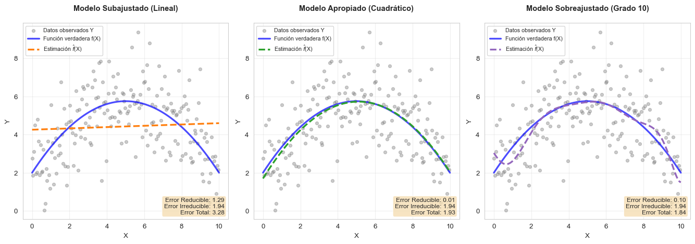
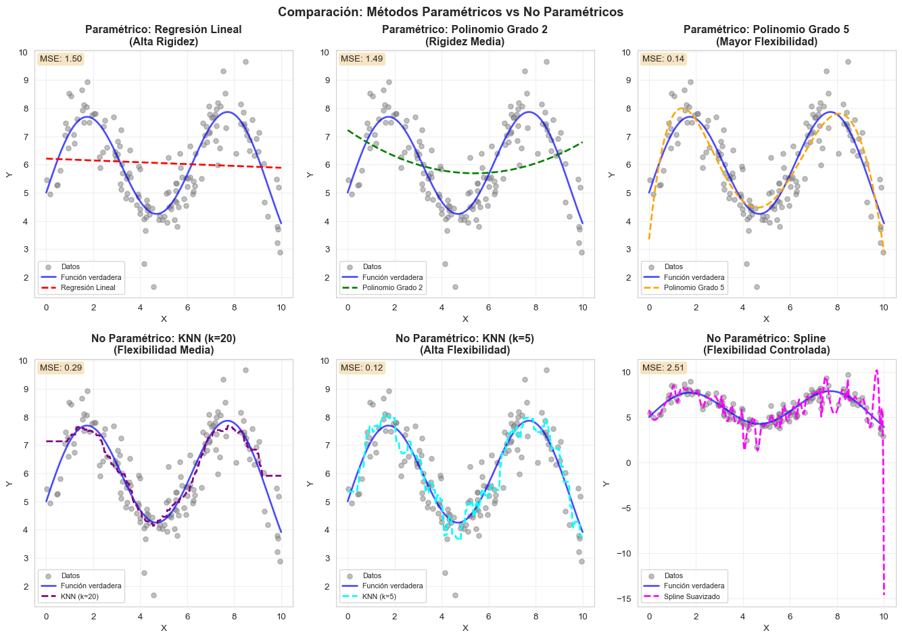
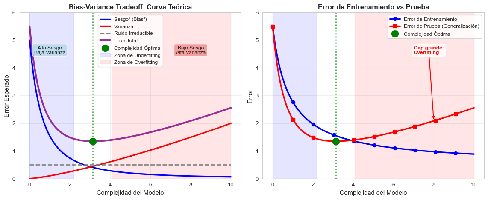
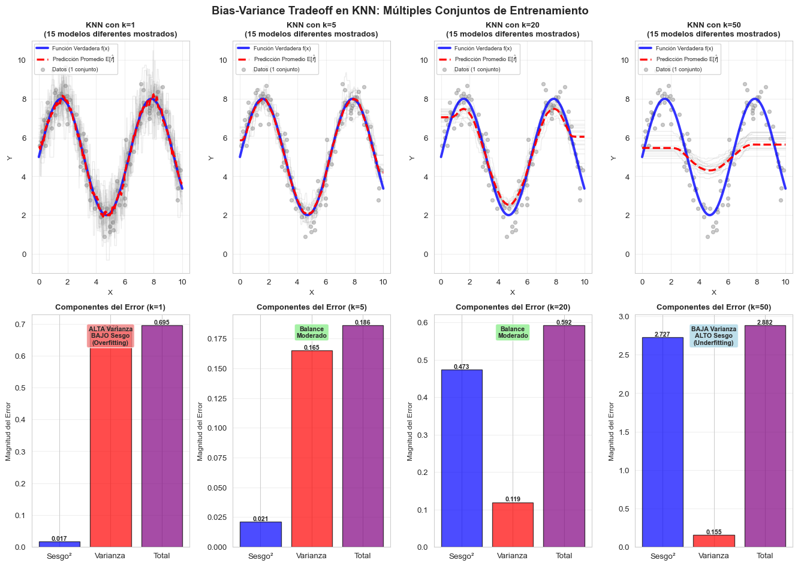
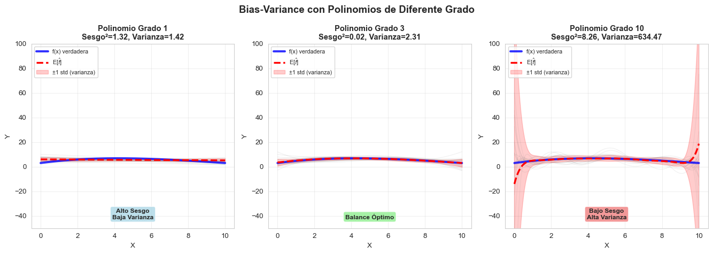

Principios de aprendizaje supervisado
Definición de aprendizaje supervisado
Supongamos que observamos una variable cuantitativa \(Y \in \mathbb{R}\) y tenemos \(p\) variables predictoras, \(X_1, X_2, ..., X_p\), las cuales denotaremos como \(X = (X_1, X_2, ..., X_p)\). Supongamos que existe alguna reluación entre ellas y se puede expresar de la siguiente forma:
\[ Y = f(x) + \epsilon\]
- Función \(f\): función desconocida que relaciona a \(X\) con \(Y\). Representa la información sistémica que \(X\) aporta a \(Y\).
- Error \(\epsilon\): representa qué tan equivocados estamos con respecto al verdadero valor de \(Y\).
La tarea del aprendizaje supervisado es aprender la función \(f\). Existen dos razones por las cuales estimar \(f\): predicción e inferencia.
Predicción
En muchas ocasiones existen un conjunto de variables \(X\) que están listas para aprovecharse, sin embargo, puede que no se pueda obtener la variable \(Y\) de manera inmediata. En este sentido, podemos predecir la variable \(Y\) siguiendo la ecuación:
\[\hat{Y} = \hat{f}(X)\]
donde \(\hat{f}\) representa nuestro estimador de \(f\) y \(\hat{Y}\) es nuestra predicción de \(Y\). En este sentido \(\hat{f}\) es una caja negra en el sentido en el que no nos preocupa cuál es la función, sino que provee predicciones precisas para \(Y\).
La precisión de \(\hat{Y}\) depende de dos cantidades:
- Error reducible: En general, \(\hat{f}\) no será un estimador perfecto de \(f\) y esto introducirá un error el cuál puede reducirse. Ejemplos: Introducir una estructura lineal cuándo el problema tiene estructura cuadrática, falta de variables explicativas, exceso de variables que no contribuyen a la predicción.
- Error ireducible: La variable \(Y\) es una función también de \(\epsilon\) y por definición nuestra predicción tendra un error inherente. Ejemplos: Predecir que comerán mañana, determinar si lloverá o no, determinar cuándo ocurrirá un temblor, ¿quién ganará una elección?.
\[ \begin{align*} \mathbb{E}[(Y-\hat{Y})^2] &= \mathbb{E}[(f(X) + \epsilon -\hat{f}(x))^2]\\ &= \underset{Reducible}{\underbrace{\mathbb{E}[(f(X) - \hat{f}(x))^2]}} + \underset{Irreducible}{\underbrace{\text{Var}(\epsilon)}} \end{align*}\]
El objetivo del curso se enfoca en técnicas para estimar \(f\) con el objectivo de minimizar el error reducible. Es importante tener en cuenta que el error irreducible siempre nos pondrá una cota en la predicción de \(Y\).
Entendiendo la descomposición del error
Analicemos con más detalle la descomposición del error esperado. Partiendo del error cuadrático medio esperado (Expected Mean Squared Error, MSE):
\[ \begin{align*} \mathbb{E}[(Y-\hat{Y})^2] &= \mathbb{E}[(f(X) + \epsilon - \hat{f}(X))^2]\\ &= \mathbb{E}[(f(X) - \hat{f}(X) + \epsilon)^2]\\ &= \mathbb{E}[(f(X) - \hat{f}(X))^2] + \mathbb{E}[\epsilon^2] + 2\mathbb{E}[(f(X) - \hat{f}(X))\epsilon]\\ &= \mathbb{E}[(f(X) - \hat{f}(X))^2] + \mathbb{E}[\epsilon^2] + 2\mathbb{E}[(f(X) - \hat{f}(X))]\mathbb{E}[\epsilon]\\ &= \mathbb{E}[(f(X) - \hat{f}(X))^2] + \text{Var}(\epsilon)\\ &= \underset{\text{Error Reducible}}{\underbrace{\mathbb{E}[(f(X) - \hat{f}(X))^2]}} + \underset{\text{Error Irreducible}}{\underbrace{\text{Var}(\epsilon)}} \end{align*}\]
Donde usamos los siguientes hechos: - \(\mathbb{E}[\epsilon] = 0\) (el error tiene media cero por definición) - \(\epsilon\) es independiente de \(X\) (asumimos que el ruido no depende de las características) - \(\text{Var}(\epsilon) = \mathbb{E}[\epsilon^2] - (\mathbb{E}[\epsilon])^2 = \mathbb{E}[\epsilon^2]\)
Implicaciones Prácticas
Error Reducible \(\mathbb{E}[(f(X) - \hat{f}(X))^2]\): - Depende de qué tan bien nuestra estimación \(\hat{f}\) aproxima la verdadera función \(f\) - Puede minimizarse usando mejores algoritmos, más datos, mejores características - Ejemplos de fuentes: - Usar regresión lineal cuando la verdadera relación es no lineal - Falta de variables explicativas importantes - Exceso de variables que añaden ruido sin información
Error Irreducible \(\text{Var}(\epsilon)\): - Representa la variabilidad intrínseca en \(Y\) que no puede ser explicada por \(X\) - No importa qué tan bien estimemos \(f\), este error siempre permanecerá - Ejemplos de fuentes: - Variables no medidas que afectan \(Y\) - Aleatoriedad inherente en el proceso generador de datos - Error de medición en la variable respuesta - Factores estocásticos genuinos (ej: movimiento browniano en precios de acciones)
Ejemplos concretos de error reducible e irreducible
Ejemplo 1: Predicción de ventas de helados
Supongamos que queremos predecir las ventas diarias de helados (\(Y\)) usando la temperatura (\(X\)).
Error reducible: Si usamos un modelo lineal pero la relación verdadera es cuadrática (a temperaturas muy altas la gente prefiere quedarse en casa), nuestro modelo será sistemáticamente incorrecto. Este error puede reducirse usando un modelo más flexible.
Error irreducible: Hay factores aleatorios que afectan las ventas (eventos inesperados, decisiones individuales caprichosas, disponibilidad de competidores ese día específico) que no podemos predecir sin importar qué tan sofisticado sea nuestro modelo.
Ejemplo 2: Diagnóstico médico
Predecir si un paciente tiene cierta enfermedad (\(Y\)) basándose en exámenes de laboratorio (\(X\)).
Error reducible: Si solo usamos un análisis de sangre cuando deberíamos considerar también presión arterial, historial familiar, y síntomas, estamos omitiendo información útil que podría mejorar nuestras predicciones.
Error irreducible: Incluso con todas las pruebas posibles, hay variabilidad biológica natural e interacciones complejas no observables que hacen imposible predecir con 100% de certeza.
Visualización de la descomposición del error
Veamos gráficamente cómo se descompone el error en una situación concreta:
Interpretación de las Gráficas
- Datos observados (puntos grises): \(Y = f(X) + \epsilon\), muestran dispersión debido al error irreducible
- Línea azul continua: La función verdadera \(f(X)\) (desconocida en la práctica)
- Línea discontinua de color: Nuestra estimación \(\hat{f}(X)\)
Panel izquierdo (Modelo Subajustado): - El modelo lineal no captura la curvatura de la función verdadera - Error reducible ALTO: la diferencia entre \(f(X)\) y \(\hat{f}(X)\) es grande - Este modelo tiene alto sesgo (bias)
Panel central (Modelo Apropiado): - El modelo cuadrático captura bien la forma de la función verdadera - Error reducible BAJO: \(\hat{f}(X)\) está cerca de \(f(X)\) - Balance óptimo entre complejidad y ajuste
Panel derecho (Modelo Sobreajustado): - El modelo de grado 10 intenta capturar también el ruido - Error reducible artificialmente bajo en estos datos específicos - Pero tendría alto error en datos nuevos (alta varianza)
Inferencia
Existen problemas en donde nos interesa más entender la relación intrinseca que existe entre \(Y\) y \(X\). En esta situación nuestro objetivo no es hacer predicción, entonces \(\hat{f}\) ya no puede ser tratada como una caja negra. En este tipo de enfoque se contestan preguntas cómo:
- ¿Cuáles son los predictores que se asocian con la variable \(Y\)?: Muchas veces solo un subconjunto de los datos \(X\) son los que realmente están relacionados con \(Y\).
- ¿Cuál es la relación entre \(Y\) y \(X_i\)?
- ¿La relación entre \(Y\) y \(X_i\) es lineal o más compleja?
¿Cómo estimar \(f\)?
Asumiremos que tenemos \(n\) datos diferentes estas observaciones serán llamadas conjunto de entrenamiento. \(x_{ij}\) representa el valor del predictor \(j\) para la observación \(i\), donde \(i=1,2,...,n\) y \(j=1,2,...,p\). \(y_i\) representa la variable respuesta de la observación \(i\). Entonces nuestro conjunto de entrenamiento consiste en:
\[{(x_1, y_1), (x_2, y_2), ..., (x_n, y_n)}\]
donde \(x_i=(x_{i1}, x_{i2}, ..., x_{ip})^T\).
Nuestro objetivo es aplicar un método de aprendizaje en el conjunto de datos para poder estimar una función desconocida de \(f\). Nos encantaría encontrar una función \(\hat{f}\) de forma tal que \(Y\simeq \hat{f}(X)\) para cualquier observación \((X, Y)\). Muchos de estos enfoque se pueden caracterizar como métodos paramétricos o no paramétricos.
Métodos paramétricos
Los métodos paramétricos involucran un enfoque de dos pasos:
- Hacemos un supuesto de la forma función de \(f\). Por ejemplo, la más sencilla es que \(f\) es linear en \(\beta\):
\[ f(X) = \beta_0 + \beta_1 X_1 + \beta_2 X_2 + ... + \beta_p X_p\]
Una vez haciendo haciendo el supuesto de linealidad el problema de estimar \(f\) es simplificado ya que en lugar de explorar el espacio funcional uno solo necesita estimar \(p+1\) coeficientes \(\beta_0, ..., \beta_p\).
- Necesitamos un proceso que utilice los datos de entrenamiento para ajustar u entrenar el modelo. El enfoque más sencillo es el método de mínimos cuadrados ordinarios (OLS):
\[\underset{\beta_0, \beta_1, ..., \beta_p}{min} \sum_{i=1}^{N}(y_i - (\beta_0 + \beta_1 x_{i1} +\beta_2 x_{i2} + ... + \beta_p X_p))^2\]
El enfoque basado en modelado se refiere a los modelos paramétricos; reduce el problema de estimar \(f\) a estimar un conjunto de parámetros. La desventaja potencial es que el modelo podría no ser igual a la verdadera \(f\) y tendremos malas estimaciones del valor de \(y\).
Métodos no paramétricos
Los métodos no paramétricos no asumen una forma funcional específica para \(f\). En lugar de eso, buscan una estimación de \(f\) que se ajuste lo más cerca posible a los datos sin estar restringida a una familia particular de funciones.
Motivación
La principal ventaja de no asumir una forma funcional es la flexibilidad:
- Si la relación verdadera entre \(X\) y \(Y\) es altamente no lineal y compleja, los métodos paramétricos pueden estar muy sesgados
- Los métodos no paramétricos pueden capturar formas funcionales arbitrarias
- No necesitamos conocimiento previo sobre la forma de la relación
Ventajas de los métodos no paramétricos
- Mayor flexibilidad: Pueden ajustarse a relaciones complejas y no lineales
- Menos supuestos: No requieren especificar la forma funcional de \(f\)
- Mejor ajuste potencial: Si la verdadera \(f\) es compleja, pueden ofrecer mejor precisión predictiva
Desventajas de los métodos no paramétricos
- Requieren más datos: Al no reducir el problema a un conjunto pequeño de parámetros, necesitan muchas más observaciones para estimar \(f\) con precisión
- Riesgo de sobreajuste: Con mucha flexibilidad, pueden ajustarse demasiado al ruido de los datos de entrenamiento
- Menor interpretabilidad: Es más difícil entender cómo cada predictor afecta la respuesta
- Costo computacional: Generalmente requieren más recursos computacionales
Ejemplos de métodos no paramétricos
1. K-Nearest Neighbors (KNN)
Para predecir \(Y\) en un punto \(x_0\), KNN: - Identifica las \(K\) observaciones en el conjunto de entrenamiento más cercanas a \(x_0\) - Promedia los valores de \(Y\) de esos \(K\) vecinos más cercanos
\[\hat{f}(x_0) = \frac{1}{K} \sum_{x_i \in \mathcal{N}_K(x_0)} y_i\]
donde \(\mathcal{N}_K(x_0)\) es el conjunto de los \(K\) vecinos más cercanos a \(x_0\).
2. Splines
Los splines son funciones polinomiales por partes que: - Dividen el rango de \(X\) en regiones - Ajustan diferentes polinomios de bajo grado en cada región - Garantizan suavidad en los puntos de unión
3. Árboles de Decisión
Los árboles: - Dividen el espacio de predictores en regiones rectangulares - Asignan una predicción constante a cada región - Son interpretables pero pueden sobreajustar fácilmente
4. Métodos de Kernel
Similar a KNN pero usando pesos que decaen suavemente con la distancia:
\[\hat{f}(x_0) = \frac{\sum_{i=1}^n K_h(x_0, x_i) y_i}{\sum_{i=1}^n K_h(x_0, x_i)}\]
donde \(K_h\) es una función kernel con bandwidth \(h\).
Comparación visual: Paramétricos vs No Paramétricos

Observaciones Clave
Métodos Paramétricos (fila superior): - Asumen una forma funcional específica (lineal, cuadrática, etc.) - Son más rígidos pero requieren menos datos - Más fáciles de interpretar - Pueden tener sesgo si la forma asumida es incorrecta
Métodos No Paramétricos (fila inferior): - No asumen forma funcional específica - Más flexibles, pueden capturar patrones complejos - Requieren más datos para estimar bien - El parámetro de suavizamiento (como \(k\) en KNN) controla el tradeoff entre flexibilidad y suavidad
¿Cuándo usar cada uno? - Paramétrico: Cuando tienes pocos datos, necesitas interpretabilidad, o conoces aproximadamente la forma de la relación - No paramétrico: Cuando tienes muchos datos, la relación es compleja, o la predicción es más importante que la interpretación
Bias-Variance Tradeoff
Uno de los conceptos más fundamentales en aprendizaje estadístico es el tradeoff entre sesgo y varianza (bias-variance tradeoff). Este concepto nos ayuda a entender por qué los modelos fallan y cómo elegir el nivel apropiado de complejidad del modelo.
Descomposición Matemática del Error Esperado
Supongamos que queremos predecir \(Y\) usando un modelo \(\hat{f}(X)\). El error cuadrático medio esperado (expected MSE) para un punto \(x_0\) se puede descomponer de la siguiente manera:
\[\begin{align*} \mathbb{E}[(Y - \hat{f}(x_0))^2] &= \mathbb{E}[(f(x_0) + \epsilon - \hat{f}(x_0))^2]\\ &= \mathbb{E}[(f(x_0) - \hat{f}(x_0))^2] + \mathbb{E}[\epsilon^2] + 2\mathbb{E}[(f(x_0) - \hat{f}(x_0))]\mathbb{E}[\epsilon]\\ &= \mathbb{E}[(f(x_0) - \hat{f}(x_0))^2] + \text{Var}(\epsilon) \end{align*}\]
Ahora, descomponemos el primer término sumando y restando \(\mathbb{E}[\hat{f}(x_0)]\):
\[\begin{align*} \mathbb{E}[(f(x_0) - \hat{f}(x_0))^2] &= \mathbb{E}[(f(x_0) - \mathbb{E}[\hat{f}(x_0)] + \mathbb{E}[\hat{f}(x_0)] - \hat{f}(x_0))^2]\\ &= \mathbb{E}[(f(x_0) - \mathbb{E}[\hat{f}(x_0)])^2] + \mathbb{E}[(\mathbb{E}[\hat{f}(x_0)] - \hat{f}(x_0))^2]\\ &\quad + 2\mathbb{E}[(f(x_0) - \mathbb{E}[\hat{f}(x_0)])(\mathbb{E}[\hat{f}(x_0)] - \hat{f}(x_0))]\\ &= (f(x_0) - \mathbb{E}[\hat{f}(x_0)])^2 + \mathbb{E}[(\hat{f}(x_0) - \mathbb{E}[\hat{f}(x_0)])^2]\\ &= \text{Bias}^2[\hat{f}(x_0)] + \text{Var}[\hat{f}(x_0)] \end{align*}\]
Por lo tanto, el error esperado total se descompone en tres componentes:
\[\boxed{\mathbb{E}[(Y - \hat{f}(x_0))^2] = \underset{\text{Sesgo}^2}{\underbrace{\text{Bias}^2[\hat{f}(x_0)]}} + \underset{\text{Varianza}}{\underbrace{\text{Var}[\hat{f}(x_0)]}} + \underset{\text{Ruido Irreducible}}{\underbrace{\text{Var}(\epsilon)}}}\]
Interpretación de los Componentes
Los Tres Componentes del Error
1. Sesgo (Bias) - \(\text{Bias}[\hat{f}(x_0)] = \mathbb{E}[\hat{f}(x_0)] - f(x_0)\)
El sesgo mide el error sistemático de nuestro modelo. Es la diferencia entre la predicción promedio de nuestro modelo (si pudiéramos entrenar infinitos modelos con diferentes conjuntos de entrenamiento) y el valor verdadero.
- Sesgo alto: El modelo es demasiado simple, no captura la estructura subyacente
- Causa: Supuestos incorrectos sobre la forma de \(f\) (ej: asumir linealidad cuando es cuadrática)
- Síntoma: Underfitting (subajuste) - mal desempeño tanto en entrenamiento como en prueba
- Ejemplos: Regresión lineal para datos claramente no lineales, KNN con \(k\) muy grande
2. Varianza (Variance) - \(\text{Var}[\hat{f}(x_0)] = \mathbb{E}[(\hat{f}(x_0) - \mathbb{E}[\hat{f}(x_0)])^2]\)
La varianza mide cuánto varían las predicciones del modelo si lo entrenamos con diferentes conjuntos de entrenamiento.
- Varianza alta: El modelo es muy sensible a fluctuaciones en los datos de entrenamiento
- Causa: Modelo demasiado flexible que captura el ruido como si fuera señal
- Síntoma: Overfitting (sobreajuste) - excelente en entrenamiento, malo en prueba
- Ejemplos: Polinomios de grado muy alto, KNN con \(k=1\), árboles muy profundos
3. Ruido Irreducible - \(\text{Var}(\epsilon) = \sigma^2\)
Es la variabilidad intrínseca que no puede ser reducida sin importar qué modelo usemos.
- Representa el error mínimo alcanzable
- Pone un límite inferior en la precisión de cualquier modelo
- No depende de nuestro modelo o algoritmo
El Tradeoff Fundamental
El término “tradeoff” surge porque hay una relación inversa entre sesgo y varianza:
- Aumentar la complejidad del modelo → ↓ Sesgo, ↑ Varianza
- Disminuir la complejidad del modelo → ↑ Sesgo, ↓ Varianza
Esta relación se puede visualizar como:
| Complejidad del Modelo | Flexibilidad | Sesgo | Varianza | Ejemplo |
|---|---|---|---|---|
| Muy Baja | Rígido | ↑↑ Alto | ↓↓ Baja | Regresión lineal |
| Baja | Poco flexible | ↑ Moderado | ↓ Baja | Polinomio grado 2 |
| Óptima | Balanceada | ↔︎ Medio | ↔︎ Media | Modelo ideal |
| Alta | Muy flexible | ↓ Bajo | ↑ Moderada | Polinomio grado 10 |
| Muy Alta | Extremo | ↓↓ Muy bajo | ↑↑ Alta | KNN con k=1 |
Conexión con Overfitting y Underfitting
El bias-variance tradeoff explica directamente los fenómenos de overfitting y underfitting:
Underfitting (Subajuste) - Ocurre cuando el modelo es demasiado simple - Caracterizado por alto sesgo - El modelo no captura los patrones reales en los datos - Error alto tanto en entrenamiento como en prueba - Ejemplo: Usar regresión lineal para datos con relación cuadrática clara
Overfitting (Sobreajuste) - Ocurre cuando el modelo es demasiado complejo - Caracterizado por alta varianza - El modelo memoriza el ruido en vez de aprender patrones generales - Error bajo en entrenamiento pero alto en prueba - Ejemplo: Polinomio de grado 20 con solo 30 observaciones
Modelo Óptimo - Balance entre sesgo y varianza - Minimiza el error esperado total - Captura los patrones verdaderos sin memorizar el ruido - Generaliza bien a datos nuevos
Relación con Parámetros de los Modelos
Diferentes modelos tienen diferentes formas de controlar el tradeoff bias-variance:
| Modelo | Parámetro de Complejidad | ↑ Parámetro → Efecto |
|---|---|---|
| KNN | \(k\) (número de vecinos) | ↑ Sesgo, ↓ Varianza |
| Regresión Polinomial | Grado del polinomio | ↓ Sesgo, ↑ Varianza |
| Árboles de Decisión | Profundidad máxima | ↓ Sesgo, ↑ Varianza |
| Regresión Ridge/Lasso | \(\lambda\) (penalización) | ↑ Sesgo, ↓ Varianza |
| Redes Neuronales | Número de capas/neuronas | ↓ Sesgo, ↑ Varianza |
Implicaciones Prácticas
No existe el modelo perfecto: Siempre habrá un tradeoff entre sesgo y varianza
Más datos ayudan: Con más datos, podemos usar modelos más complejos sin aumentar tanto la varianza
Validación cruzada es clave: Permite estimar dónde está el punto óptimo de complejidad
Regularización controla el tradeoff: Técnicas como Ridge, Lasso, o early stopping permiten ajustar finamente este balance
Conocer tu problema importa:
- Si tienes pocos datos → Prioriza modelos simples (mayor sesgo, menor varianza)
- Si tienes muchos datos → Puedes usar modelos complejos (menor sesgo, mayor varianza)
Visualización del Bias-Variance Tradeoff
Veamos gráficamente cómo sesgo y varianza cambian con la complejidad del modelo:

Interpretación de las Curvas
Panel Izquierdo - Descomposición del Error: - Sesgo² (azul): Disminuye cuando aumenta la complejidad del modelo - Varianza (roja): Aumenta cuando aumenta la complejidad del modelo - Ruido Irreducible (gris): Constante, no depende del modelo - Error Total (morado): Suma de los tres componentes, tiene forma de U - Punto óptimo (verde): Minimiza el error total, balancea sesgo y varianza
Panel Derecho - Entrenamiento vs Prueba: - Error de Entrenamiento (azul): Siempre disminuye con más complejidad - Error de Prueba (rojo): Disminuye inicialmente, luego aumenta (overfitting) - El gap entre ambos aumenta con la complejidad → indica overfitting
Ejemplo Práctico: KNN con Diferentes Valores de k
Veamos cómo el bias-variance tradeoff se manifiesta en K-Nearest Neighbors:

Observaciones Clave del Experimento KNN
k=1 (Alta Complejidad): - Las líneas grises individuales son muy diferentes entre sí → Alta varianza - La predicción promedio (roja) se acerca bastante a la función verdadera (azul) → Bajo sesgo - Problema: Cada modelo individual es muy inestable y sensible al ruido - Resultado: Overfitting - el modelo memoriza los datos específicos
k=5 (Complejidad Media-Alta): - Las líneas grises son más similares entre sí → Varianza moderada - La predicción promedio aún sigue bien la función verdadera → Sesgo bajo a moderado - Balance razonable para este problema
k=20 (Complejidad Media-Baja): - Las líneas grises son muy similares → Baja varianza - La predicción promedio pierde algo de la estructura verdadera → Sesgo moderado - Más estable pero menos preciso en capturar detalles
k=50 (Baja Complejidad): - Las líneas grises son casi idénticas → Muy baja varianza - La predicción promedio es demasiado suave, pierde oscilaciones → Alto sesgo - Problema: Modelo demasiado simple que no captura la estructura real - Resultado: Underfitting - el modelo es demasiado rígido
Lección Principal: A medida que \(k\) aumenta (complejidad disminuye): - ✓ Ganamos estabilidad (menor varianza) - ✗ Perdemos capacidad de ajuste (mayor sesgo)
Bias-Variance con Regresiones Polinomiales
Otro ejemplo clásico es el grado del polinomio:

Resumen: Cómo Identificar y Corregir Problemas
¿Cómo saber si tienes alto sesgo (underfitting)? - ✓ Error de entrenamiento alto - ✓ Error de prueba alto - ✓ Poca diferencia entre error de entrenamiento y prueba - ✓ El modelo es demasiado simple para capturar los patrones
Soluciones para alto sesgo: 1. Aumentar la complejidad del modelo (más características, mayor grado, menor k en KNN) 2. Reducir la regularización 3. Agregar características polinomiales o de interacción 4. Probar un algoritmo más flexible
¿Cómo saber si tienes alta varianza (overfitting)? - ✓ Error de entrenamiento bajo - ✓ Error de prueba alto - ✓ Gran diferencia (gap) entre error de entrenamiento y prueba - ✓ El modelo es muy sensible a pequeños cambios en los datos
Soluciones para alta varianza: 1. Reducir la complejidad del modelo (menos características, menor grado, mayor k en KNN) 2. Aumentar la regularización (Ridge, Lasso, dropout) 3. Obtener más datos de entrenamiento 4. Usar ensemble methods (bagging, random forests) 5. Aplicar validación cruzada para seleccionar hiperparámetros